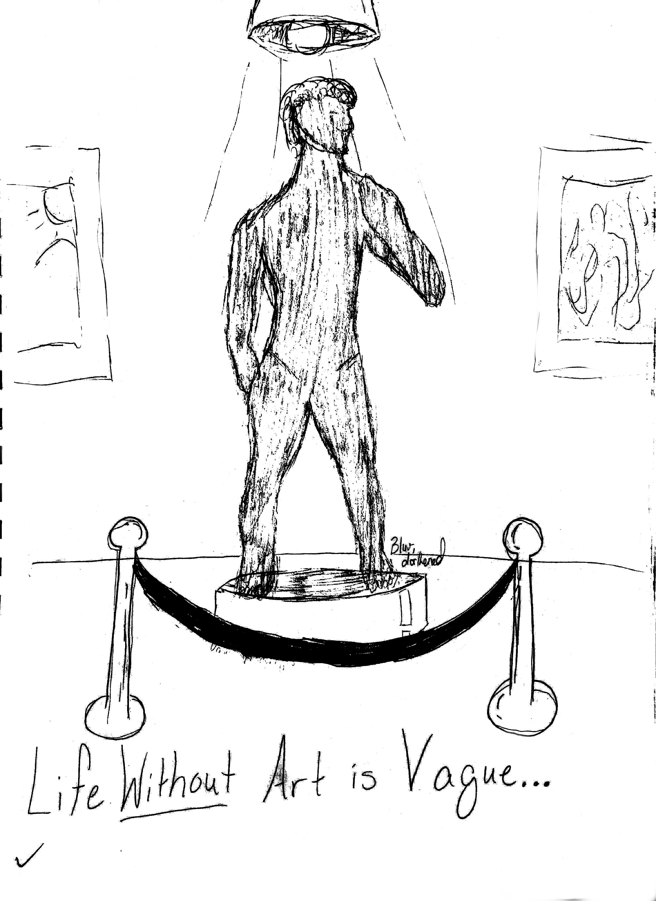
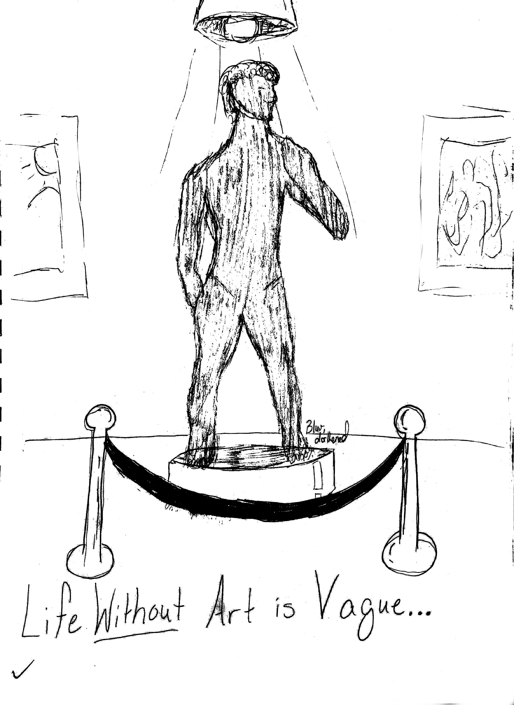
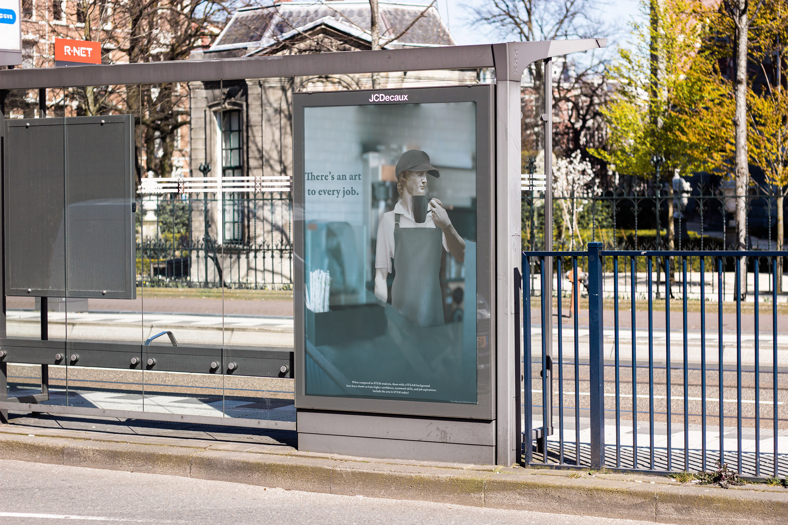

Advertisement Campaign: The Arts in STEM

- Medium: Poster, Interactive Poster
- Date: Fall 2022
- Programs Used: Adobe Photoshop, Adobe Aero
 

To convey a message concerning the importance of the arts within STEM, this project began with preliminary sketches. A goal for the project was to utilize humor and surrealism in some way, yet it was initially unclear how the project could achieve this. After toying with many different ideas and executions, ultimately it was decided to take famous art pieces and subvert expectations by having them placed into what is often considered “real jobs” by standards of non-artists.
This would create a sense or irony and humor as being told the arts are a waste and other discouraging statements is no stranger to the beginning artist or art student. Seeing these art pieces in places they clearly don’t belong would hopefully show the viewer that art itself is a job and is already found in “real jobs” across the world. With that being said, if art is part of our lives, why not allow others to study further and include learning material into STEM programs.

Transitioning from physical sketches to digital mockups is one of my favorite phases of the creation process. Here you really get to toy around with different compositions, placements, styles, colors, and anything else you could imagine! This phase in the design process is somewhat akin to the thinking of “there are no wrong answers here!”. Once a sufficient layout had been created, then the project would move to taking photography of objects needed or conducting research on other possible elements needed.
To create a more lasting impact onto the viewer, one execution of this campaign is fully animated in a short video that brings the poster to life when the related QR code is scanned. The video utilizes motion graphics, sound effects for atmosphere, and even lighting changes to make the world feel more alive.
These posters would be primarily used digitally in banners to accommodate for the interactive element and to create cohesiveness across the campaign. However, these posters may function as printed paraphernalia as well.